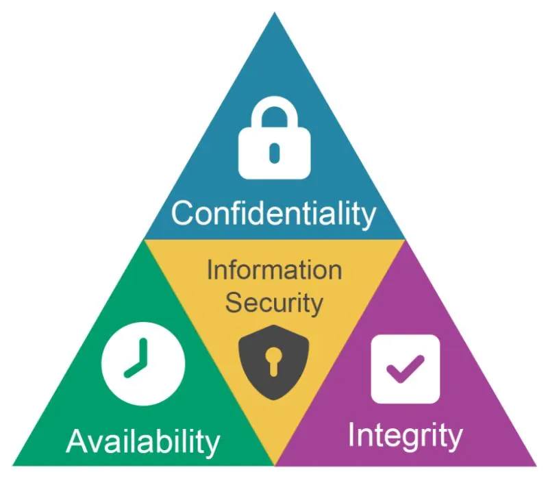

Yazı Hakkında Ön Söz
Preface to the Article
Güvenlik üçlüsü olarak adlandırılan Confidentiality (Gizlilik), Integrity (Bütünlük) ve Availability (Erişilebilirlik) yani diğer adıyla CIA; bir veya birden fazla güvenlik işlevini garanti eden bir sistemde kullanılabilir. Bu kullanımlara da güvenlik modelleri denir.
Bu yazımda bahsedeceğim modeller sırasıyla şunlardır:
- Bell-LaPadula Modeli / Model
- The Biba Integrity Modeli / Model
- The Clark-Wilson Modeli / Model

1. Bell-LaPadula Modeli
1. Bell-LaPadula Model
Bell-LaPadula Modeli, üç özelliği belirleyerek gizliliği (Confidentiality) sağlamayı amaçlamaktadır. Daha yüksek güvenlik iznine sahip kişilerle gizli bilgileri paylaşabilirsiniz ve daha düşük güvenlik iznine sahip kişilerden gizli bilgiler alabilirsiniz.
Bu üç kural şunlardır:
Simple Security Property: Bu özellik “okuma yok” olarak adlandırılır; daha düşük bir güvenlik seviyesindeki bir öznenin daha yüksek bir güvenlik seviyesindeki bir nesneyi okuyamayacağını belirtir. Bu kural, yetkili seviyenin üzerindeki hassas bilgilere erişimi engeller.
Star Security Property: Bu özellik “yazma yok” olarak adlandırılır; daha yüksek güvenlik seviyesindeki bir öznenin daha düşük güvenlik seviyesindeki bir nesneye yazamayacağını belirtir. Bu kural, hassas bilgilerin daha düşük güvenlik seviyesindeki bir özneye ifşa edilmesini önler.
Discretionary-Security Property: Bu özellik, okuma ve yazma işlemlerine izin vermek için bir erişim matrisi kullanır. İlk iki özellik ile birlikte kullanılır.
- Dezavantajı: Dosya paylaşımını idare edememe gibi bazı sınırlamaları vardır.
2. The Biba Integrity Modeli
2. The Biba Integrity Model
Biba Modeli, iki temel özelliği belirleyerek bütünlüğe (Integrity) ulaşmayı hedefler. Bu kural Bell-LaPadula Modeli ile çelişir fakat biri gizlilikle ilgiliyken diğeri bütünlükle ilgilidir.
Bu iki özellik:
Simple Integrity Property: Bu özellik “aşağı doğru okuma yok” olarak adlandırılır; daha yüksek bütünlüğe sahip bir özne, daha düşük bütünlüğe sahip bir nesneden okuma yapmamalıdır.
Star Integrity Property: Bu özellik “yazma yok” olarak adlandırılır; daha düşük bütünlükteki bir özne, daha yüksek bütünlükteki bir nesneye yazmamalıdır.
- Dezavantajı: İçeri gelen tehditleri ele alamaması yönünden zayıftır.
3. The Clark-Wilson Modeli
3. The Clark-Wilson Model
Bazı spesifik kavramları kullanarak bütünlüğe (Integrity) ulaşmayı hedefler.
Bu kavramlar:
- Constrained Data Item (CDI): Bütünlüğünü korumak istediğimiz veri türünü ifade eder.
- Unconstrained Data Item (UDI): Kullanıcı ve sistem girişi gibi CDI’nin ötesindeki tüm veri türlerini ifade eder.
- Transformation Procedures (TPs): Prosedürler, okuma ve yazma gibi programlanmış işlemlerdir ve CDI’ların bütünlüğünü korumalıdır.
- Integrity Verification Procedures (IVPs): Prosedürler CDI’ların geçerliliğini kontrol eder ve sağlar.
Diğer Güvenlik Modelleri
Other Security Models
Burada detaylıca bahsetmediğim ancak siber güvenlik mimarilerinde sıkça karşımıza çıkan diğer bazı modeller de bulunmaktadır. Örneğin:
- Brewer and Nash Model
- Goguen-Meseguer Model
- Sutherland Model
- Graham-Denning Model
- Harrison-Ruzzo-Ullman Model